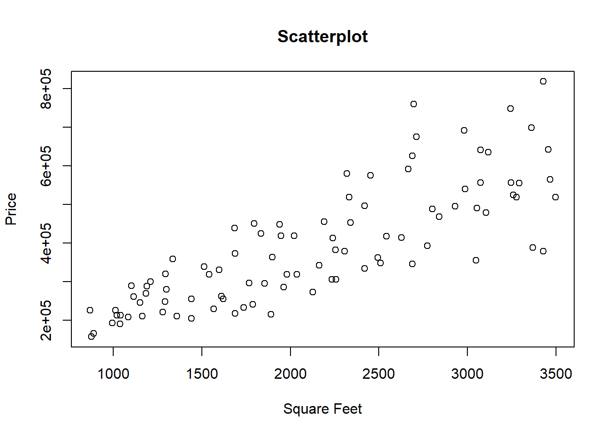
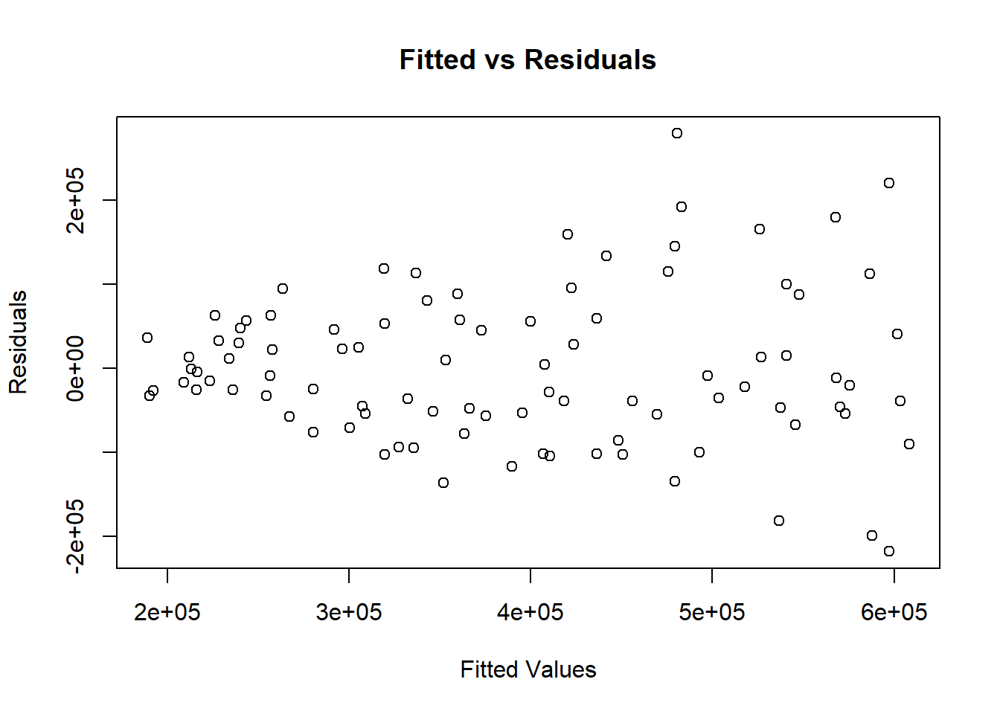
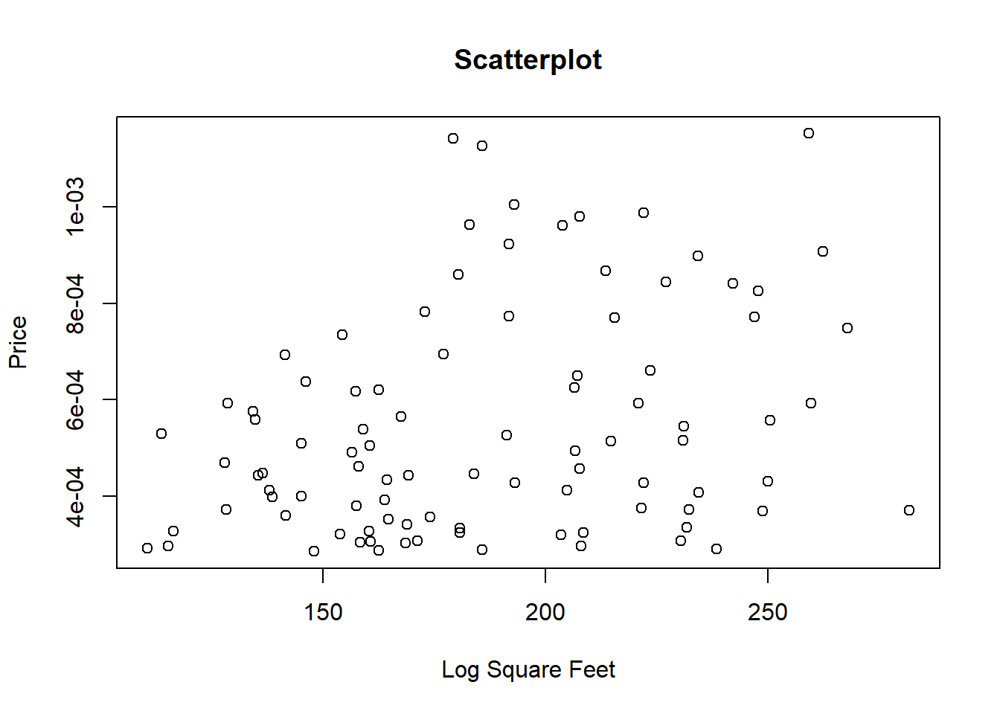
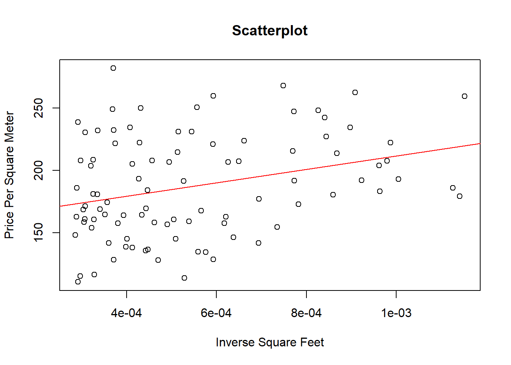
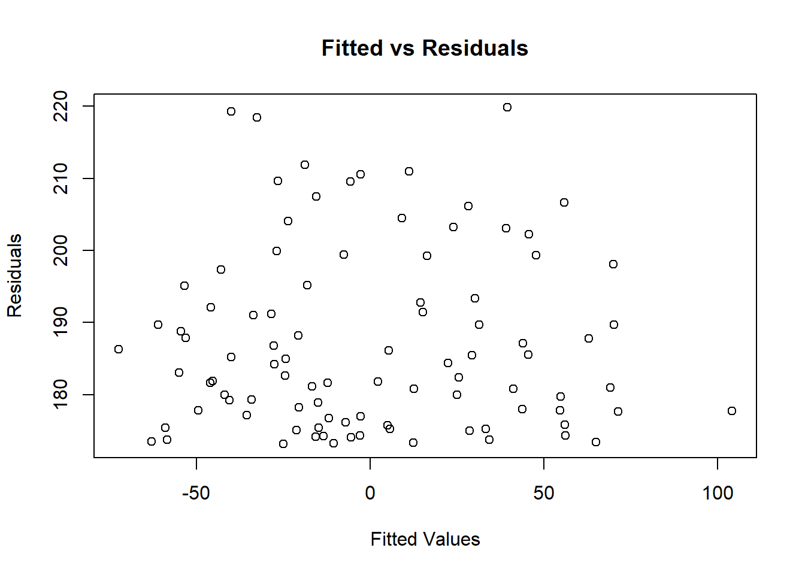
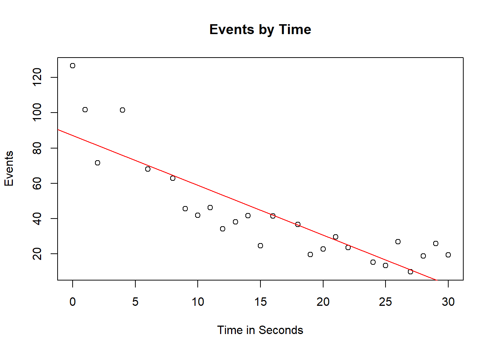
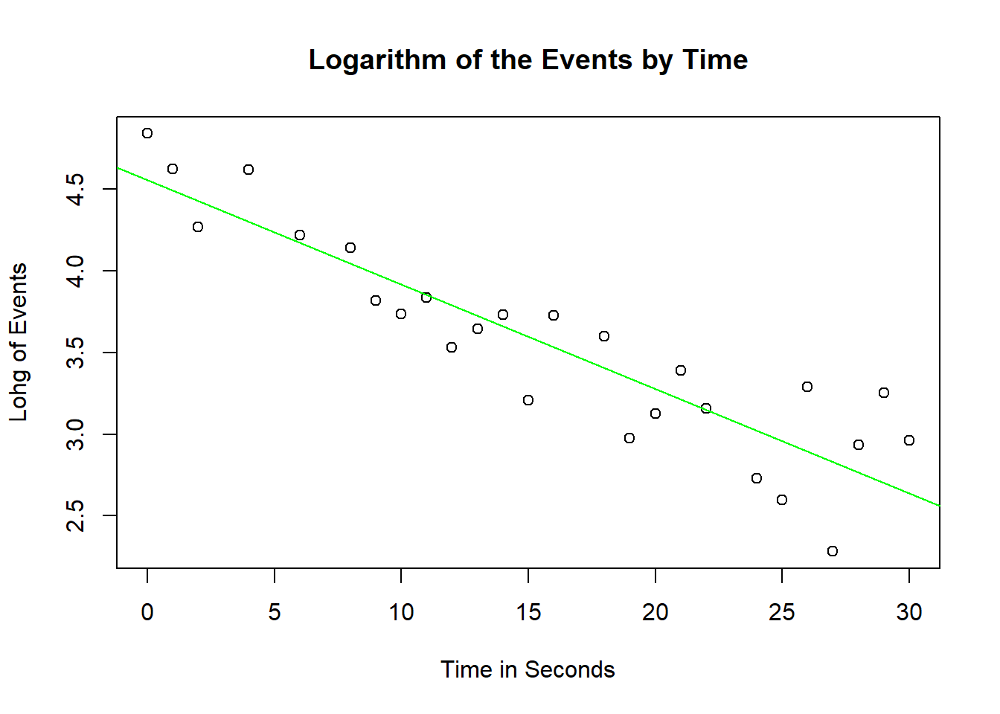

Regression models need to fulfill assumptions in order to trust their results:
**Homoskedasticity v.s. Heteroskedasticity
…
The Breusch-Pagan test is used to test for heteroscedasticity in a linear regression model. It tests whether the estimated variance of the residuals from a regression are dependent on the values of the independent variables:
H0:Error variances are all equal (HOMOSKEDASTICITY)
H1:Error variances are a function of one or more variables (HETEROSKEDASTICITY)
Heteroskedasticity can be solved by transforming the model: The response variable becomes price per square foot and the explanatory variable becomes the reciprocal of the number of square feet.
Multicollinearity: exists when two or more of the predictors in a regression model are moderately or highly correlated. This can be detected by having a look at the correlation matrix. VIF (Variance Inflation Factor) indicate which variables suffer from multicollinearity. VIF > 5.
Non-Linearity: When a pattern between y and x is not linear, we can transform x in order to accomodate the non-linearity. This will change the interpretation of the estimates in our model, but will allow us to compute regression models to estimate non-linear relationships.
Autocorrelation: Can be solved with time series models.
# -----------------------------------------------------------------------------------------------
# Case I: Heteroskedasticity
# -----------------------------------------------------------------------------------------------
# Load the data
df <- read.csv("6_Housing.csv", sep=";")
# Scatterplot
plot(df$squarefoot,df$price,xlab="Square Feet", ylab="Price",main="Scatterplot")
# Regression Model
lm1<- lm(df$price ~ df$squarefoot)
summary(lm1)##
## Call:
## lm(formula = df$price ~ df$squarefoot)
##
## Residuals:
## Min 1Q Median 3Q Max
## -218270 -53995 -13756 54766 279430
##
## Coefficients:
## Estimate Std. Error t value Pr(>|t|)
## (Intercept) 50598.69 27411.66 1.846 0.0681 .
## df$squarefoot 159.43 12.08 13.201 <2e-16 ***
## ---
## Signif. codes: 0 '***' 0.001 '**' 0.01 '*' 0.05 '.' 0.1 ' ' 1
##
## Residual standard error: 91050 on 92 degrees of freedom
## Multiple R-squared: 0.6545, Adjusted R-squared: 0.6507
## F-statistic: 174.3 on 1 and 92 DF, p-value: < 2.2e-16# Plot the residuals vs the fitted values.
plot(lm1$fitted.values,lm1$residuals, xlab="Fitted Values", ylab="Residuals",main="Fitted vs Residuals")
# It seem slike heteroskedasticity: BAD!
# Let's conduct a hypothesis test: Breush Pagan Test.
# In the Breush-Pagan Test, the Null Hypothesis states HOMOSKEDASTICITY (the good thing)
# Hence, rejecting it (low p-value) is an indicator of HETEROSKEDASTICITY (the bad thing)
# load the library
library(lmtest)## Loading required package: zoo##
## Attaching package: 'zoo'## The following objects are masked from 'package:base':
##
## as.Date, as.Date.numeric
bptest(df$price ~ df$squarefoot)##
## studentized Breusch-Pagan test
##
## data: df$price ~ df$squarefoot
## BP = 15.606, df = 1, p-value = 7.802e-05library(lmtest)
library(sandwich)
coeftest(lm1, vcov = vcovHC(lm1, "HC1")) ##
## t test of coefficients:
##
## Estimate Std. Error t value Pr(>|t|)
## (Intercept) 50598.687 22241.439 2.275 0.02523 *
## df$squarefoot 159.426 12.529 12.725 < 2e-16 ***
## ---
## Signif. codes: 0 '***' 0.001 '**' 0.01 '*' 0.05 '.' 0.1 ' ' 1# To solve heteroskedasticity, we can transform the model.
# Divide the model by square feet.
# We already have price per sqf in the dataset
# Transform the variable (and therefore the interpretation of the equation)
df$inversesqf<-1/df$squarefoot
# Scatterplot (looks good!)
plot(df$priceperSqFt,df$inversesqf,xlab="Log Square Feet", ylab="Price",main="Scatterplot")
# Compute a new model:
lm2<-lm(df$priceperSqFt ~ df$inversesqf)
summary(lm2)##
## Call:
## lm(formula = df$priceperSqFt ~ df$inversesqf)
##
## Residuals:
## Min 1Q Median 3Q Max
## -72.508 -27.747 -6.462 29.929 104.061
##
## Coefficients:
## Estimate Std. Error t value Pr(>|t|)
## (Intercept) 157.75 10.52 14.994 <2e-16 ***
## df$inversesqf 53886.71 17736.36 3.038 0.0031 **
## ---
## Signif. codes: 0 '***' 0.001 '**' 0.01 '*' 0.05 '.' 0.1 ' ' 1
##
## Residual standard error: 39.41 on 92 degrees of freedom
## Multiple R-squared: 0.09118, Adjusted R-squared: 0.08131
## F-statistic: 9.231 on 1 and 92 DF, p-value: 0.003097# Plot the model in the scatterplot
plot(df$inversesqf,df$priceperSqFt,xlab="Inverse Square Feet", ylab="Price Per Square Meter",main="Scatterplot")
abline(lm(df$priceperSqFt ~ df$inversesqf),col="red")
# Plot the residuals
plot(lm2$residuals,lm2$fitted.values, xlab="Fitted Values", ylab="Residuals",main="Fitted vs Residuals")
# Breush Pagan Test:
bptest(df$priceperSqFt ~ df$inversesqf)##
## studentized Breusch-Pagan test
##
## data: df$priceperSqFt ~ df$inversesqf
## BP = 1.3246, df = 1, p-value = 0.2498# How can we interpret the new model? Let's go back to the slides to learn it.# -----------------------------------------------------------------------------------------------
# Case II: Multicollinearity
# -----------------------------------------------------------------------------------------------
library('mctest')
# Load data from Hald.
mat<-(Hald)
# Generate File
save(mat, file="mat.rdata")
head(mat)## y X1 X2 X3 X4
## [1,] 78.5 7 26 6 60
## [2,] 74.3 1 29 15 52
## [3,] 104.3 11 56 8 20
## [4,] 87.6 11 31 8 47
## [5,] 95.9 7 52 6 33
## [6,] 109.2 11 55 9 22# Compute correlation matrix
cor(mat)## y X1 X2 X3 X4
## y 1.0000000 0.7307175 0.8162526 -0.5346707 -0.8213050
## X1 0.7307175 1.0000000 0.2285795 -0.8241338 -0.2454451
## X2 0.8162526 0.2285795 1.0000000 -0.1392424 -0.9729550
## X3 -0.5346707 -0.8241338 -0.1392424 1.0000000 0.0295370
## X4 -0.8213050 -0.2454451 -0.9729550 0.0295370 1.0000000# High negative correlation between X1 and X3, X2 and X4.
# Compute a model using all the Xs
df<-as.data.frame(Hald)
lm1<-lm(y ~ X1 + X2 + X3 + X4, data = df)
summary(lm1)##
## Call:
## lm(formula = y ~ X1 + X2 + X3 + X4, data = df)
##
## Residuals:
## Min 1Q Median 3Q Max
## -3.1750 -1.6709 0.2508 1.3783 3.9254
##
## Coefficients:
## Estimate Std. Error t value Pr(>|t|)
## (Intercept) 62.4054 70.0710 0.891 0.3991
## X1 1.5511 0.7448 2.083 0.0708 .
## X2 0.5102 0.7238 0.705 0.5009
## X3 0.1019 0.7547 0.135 0.8959
## X4 -0.1441 0.7091 -0.203 0.8441
## ---
## Signif. codes: 0 '***' 0.001 '**' 0.01 '*' 0.05 '.' 0.1 ' ' 1
##
## Residual standard error: 2.446 on 8 degrees of freedom
## Multiple R-squared: 0.9824, Adjusted R-squared: 0.9736
## F-statistic: 111.5 on 4 and 8 DF, p-value: 4.756e-07# Only X2 is significant.
# Let's have a look at the VIFs
x <- Hald[ , -1]
y<-Hald[, 1]
x## X1 X2 X3 X4
## [1,] 7 26 6 60
## [2,] 1 29 15 52
## [3,] 11 56 8 20
## [4,] 11 31 8 47
## [5,] 7 52 6 33
## [6,] 11 55 9 22
## [7,] 3 71 17 6
## [8,] 1 31 22 44
## [9,] 2 54 18 22
## [10,] 21 47 4 26
## [11,] 1 40 23 34
## [12,] 11 66 9 12
## [13,] 10 68 8 12y## [1] 78.5 74.3 104.3 87.6 95.9 109.2 102.7 72.5 93.1 115.9 83.8 113.3
## [13] 109.4imcdiag(x, y)##
## Call:
## imcdiag(x = x, y = y)
##
##
## All Individual Multicollinearity Diagnostics Result
##
## VIF TOL Wi Fi Leamer CVIF Klein IND1 IND2
## X1 38.4962 0.0260 112.4886 187.4811 0.1612 -0.5846 0 0.0087 0.9875
## X2 254.4232 0.0039 760.2695 1267.1158 0.0627 -3.8635 1 0.0013 1.0099
## X3 46.8684 0.0213 137.6052 229.3419 0.1461 -0.7117 0 0.0071 0.9923
## X4 282.5129 0.0035 844.5386 1407.5643 0.0595 -4.2900 1 0.0012 1.0103
##
## 1 --> COLLINEARITY is detected by the test
## 0 --> COLLINEARITY is not detected by the test
##
## X1 , X2 , X3 , X4 , coefficient(s) are non-significant may be due to multicollinearity
##
## R-square of y on all x: 0.9824
##
## * use method argument to check which regressors may be the reason of collinearity
## ===================================# As by the analysis of VIFs, high colinearity between X4 and X2.
lm2<-lm(y ~ X1 + X2 + X3, data = df)
summary(lm2)##
## Call:
## lm(formula = y ~ X1 + X2 + X3, data = df)
##
## Residuals:
## Min 1Q Median 3Q Max
## -3.2543 -1.4726 0.1755 1.5409 3.9711
##
## Coefficients:
## Estimate Std. Error t value Pr(>|t|)
## (Intercept) 48.19363 3.91330 12.315 6.17e-07 ***
## X1 1.69589 0.20458 8.290 1.66e-05 ***
## X2 0.65691 0.04423 14.851 1.23e-07 ***
## X3 0.25002 0.18471 1.354 0.209
## ---
## Signif. codes: 0 '***' 0.001 '**' 0.01 '*' 0.05 '.' 0.1 ' ' 1
##
## Residual standard error: 2.312 on 9 degrees of freedom
## Multiple R-squared: 0.9823, Adjusted R-squared: 0.9764
## F-statistic: 166.3 on 3 and 9 DF, p-value: 3.367e-08# After eliminating one of the variables, we reach a much higher level of significance.
# Continue eliminating the variable with a high p-value:
lm1<-lm(y ~ X1 + X2 , data = df)
summary(lm1)##
## Call:
## lm(formula = y ~ X1 + X2, data = df)
##
## Residuals:
## Min 1Q Median 3Q Max
## -2.893 -1.574 -1.302 1.363 4.048
##
## Coefficients:
## Estimate Std. Error t value Pr(>|t|)
## (Intercept) 52.57735 2.28617 23.00 5.46e-10 ***
## X1 1.46831 0.12130 12.11 2.69e-07 ***
## X2 0.66225 0.04585 14.44 5.03e-08 ***
## ---
## Signif. codes: 0 '***' 0.001 '**' 0.01 '*' 0.05 '.' 0.1 ' ' 1
##
## Residual standard error: 2.406 on 10 degrees of freedom
## Multiple R-squared: 0.9787, Adjusted R-squared: 0.9744
## F-statistic: 229.5 on 2 and 10 DF, p-value: 4.407e-09#------------------------------------------------------------------------------------------------
# Case III: Non-Linearity
# -----------------------------------------------------------------------------------------------
# Load the data
df <- structure(list(Time = c(0, 1, 2, 4, 6, 8, 9, 10, 11, 12, 13, 14, 15, 16, 18, 19, 20, 21, 22, 24, 25, 26, 27, 28, 29, 30),
Counts = c(126.6, 101.8, 71.6, 101.6, 68.1, 62.9, 45.5, 41.9, 46.3, 34.1, 38.2, 41.7, 24.7, 41.5, 36.6, 19.6, 22.8, 29.6, 23.5, 15.3, 13.4, 26.8, 9.8, 18.8, 25.9, 19.3)),
.Names = c("Time", "Counts"), row.names = c(1L, 2L, 3L, 5L, 7L, 9L, 10L, 11L, 12L, 13L, 14L, 15L, 16L, 17L, 19L, 20L, 21L, 22L, 23L, 25L, 26L, 27L, 28L, 29L, 30L,31L), class = "data.frame")
# Plot the variables
plot(df$Time,df$Counts, xlab="Time in Seconds", ylab="Events", main="Events by Time")
# Linear model
lm1<-lm(df$Counts ~ df$Time)
summary(lm1)##
## Call:
## lm(formula = df$Counts ~ df$Time)
##
## Residuals:
## Min 1Q Median 3Q Max
## -20.084 -9.875 -1.882 8.494 39.445
##
## Coefficients:
## Estimate Std. Error t value Pr(>|t|)
## (Intercept) 87.1550 6.0186 14.481 2.33e-13 ***
## df$Time -2.8247 0.3318 -8.513 1.03e-08 ***
## ---
## Signif. codes: 0 '***' 0.001 '**' 0.01 '*' 0.05 '.' 0.1 ' ' 1
##
## Residual standard error: 15.16 on 24 degrees of freedom
## Multiple R-squared: 0.7512, Adjusted R-squared: 0.7408
## F-statistic: 72.47 on 1 and 24 DF, p-value: 1.033e-08abline(lm1, col="red")
# Problem: Non-Linear Relatinship
# Transform the model by taking the log of the counts
plot(df$Time,log(df$Counts), xlab="Time in Seconds", ylab="Lohg of Events", main="Logarithm of the Events by Time")
# Model
expm <- lm(log(df$Counts)~ df$Time)
summary(expm)##
## Call:
## lm(formula = log(df$Counts) ~ df$Time)
##
## Residuals:
## Min 1Q Median 3Q Max
## -0.54715 -0.17618 0.02855 0.18850 0.55254
##
## Coefficients:
## Estimate Std. Error t value Pr(>|t|)
## (Intercept) 4.555249 0.111690 40.78 < 2e-16 ***
## df$Time -0.063915 0.006158 -10.38 2.36e-10 ***
## ---
## Signif. codes: 0 '***' 0.001 '**' 0.01 '*' 0.05 '.' 0.1 ' ' 1
##
## Residual standard error: 0.2814 on 24 degrees of freedom
## Multiple R-squared: 0.8178, Adjusted R-squared: 0.8102
## F-statistic: 107.7 on 1 and 24 DF, p-value: 2.362e-10abline(expm,col="green")